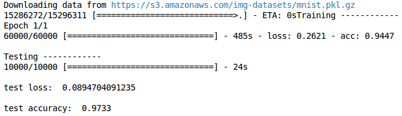

CNN 卷积神经网络
作者: Mark JingNB 编辑: 莫烦 2016-10-30
学习资料:
搭建模型
这次我们主要讲CNN（Convolutional Neural Networks）卷积神经网络在 keras 上的代码实现。 用到的数据集还是MNIST。不同的是这次用到的层比较多，导入的模块也相应增加了一些。
from keras.layers import Dense, Activation, Convolution2D, MaxPooling2D, Flatten
首先是数据预处理和model的设置。 然后添加第一个卷积层，滤波器数量为32，大小是5*5，Padding方法是same即不改变数据的长度和宽带。 因为是第一层所以需要说明输入数据的 shape ，激励选择 relu 函数。代码如下
model.add(Convolution2D(
batch_input_shape=(64, 1, 28, 28),
filters=32,
kernel_size=5,
strides=1,
padding='same', # Padding method
data_format='channels_first',
))
model.add(Activation('relu'))
第一层 pooling（池化，下采样），分辨率长宽各降低一半，输出数据shape为（32，14，14）
model.add(MaxPooling2D(
pool_size=2,
strides=2,
padding='same', # Padding method
data_format='channels_first',
))
再添加第二卷积层和池化层
model.add(Convolution2D(64, 5, strides=1, padding='same', data_format='channels_first'))
model.add(Activation('relu'))
model.add(MaxPooling2D(2, 2, 'same', data_format='channels_first'))
经过以上处理之后数据shape为（64，7，7），需要将数据抹平成一维，再添加全连接层1
model.add(Flatten())
model.add(Dense(1024))
model.add(Activation('relu'))
添加全连接层2（即输出层）
model.add(Dense(10))
model.add(Activation('softmax'))
设置adam优化方法，loss函数, metrics方法来观察输出结果
model.compile(optimizer=adam,
loss='categorical_crossentropy',
metrics=['accuracy'])
训练
开始训练模型
model.fit(X_train, y_train, epoch=1, batch_size=32,)
输出test的loss和accuracy结果

如果你觉得这篇文章或视频对你的学习很有帮助, 请你也分享它, 让它能再次帮助到更多的需要学习的人. 莫烦没有正式的经济来源, 如果你也想支持 莫烦Python 并看到更好的教学内容, 赞助他一点点, 作为鼓励他继续开源的动力.